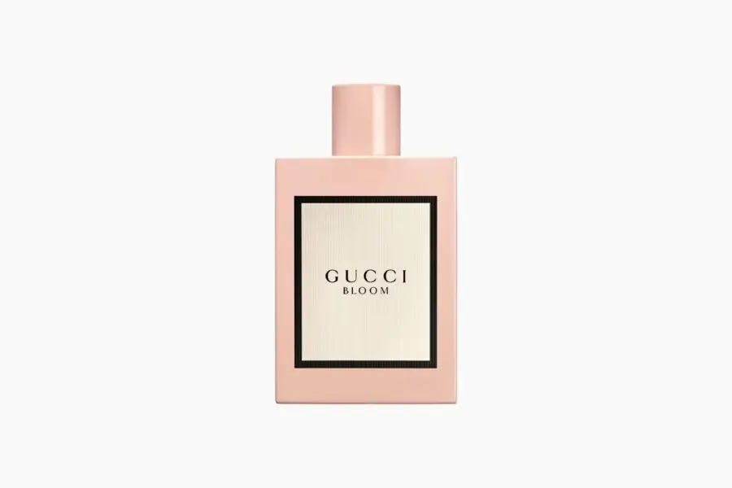

My Top 5 List
Top 5 Perfumes for Men
Dior Sauvage
Sauvage by Dior is a highly concentrated interpretation, melding extreme freshness with warm ambery tones. The top scent notes are Calabrian bergamot, mandarin, cardamom, and elemi with vanilla and tonka bean giving the right amount of sweetness as base notes.
Calvin Klein Eternity for men
Eternity is a romantic floral fragrance that was inspired by lasting love. The top notes are lavender, lemon, bergamot, and mandarin orange. This one works for both him and her.
Yves Saint Laurent Y
This fragrance gives a fearless vibe and is for someone who would love experimenting. It is a long-lasting scent that has the fresh notes of sage and lavender fused with a crisp bite of geranium rounded out by sensual woods and masculine incense.
For Him Black Edition by Zara
This is for those who are all in for a strong long-lasting smell. The scent’s notes have the right blend of nutmeg, orange blossom, and cedar.
Hugo Boss Boss
This classic cologne has fruity and citrus top notes of apple, lemon, and plum balanced with cardamom and cinnamon, which gives a warm note that stays for a long time.
Top 5 Perfumes for Women
Viktor & Rolf Flowerbomb
Shaped like a diamond grenade, Viktor & Rolf Flowerbomb is a glittering explosion of fresh and sweet sensations and an endlessly sought-after scent. Designed by the talented trio, Olivier Poleg, Carlos Benaim, and Domitille Berthier, this best-smelling perfume for women is like wandering through your own secret flower garden—but after dark.
Tom Ford Black Orchid Gold
Stroll back into the world of old Hollywood drama with velvet curtains and a dash of red matte lipstick with the potent Black Orchid Gold. Black Truffle, Ylang Ylang, and its namesake Black Orchid confidently take center stage in this sensual and glamorous fragrance from Tom Ford, with an all-gold Art-Deco inspired bottle that demands attention.
Ariana Grande Cloud
The fragrance equivalent of a tired head submerging into a soft pillow, Ariana Grande’s Cloud combines dreamy possibilities with home-comforts and sultry enticements. The distinctive heady rush opens with lulling lavender notes and subtle hints of vanilla orchids. While unassuming pear auras and bold bergamot tangs speak to the tempting and intriguing.
Yves Saint Laurent Black Opium
Yves Saint Laurent Black Opium’s adrenaline-rich coffee mixed with sweet vanilla, orange blossom, and jasmine will wake you up faster than any espresso ever could. Addictive? We’d say so. A firm favorite, it’s sexy, feminine, and bold, with a wide-eyed and awake sprinkle of notes gently complemented by a sugary softness.
Gucci Bloom
There’s a reason many of the top perfumes for women ooze floral notes. Delighting our senses, the natural beauty of flowers has been a muse for artists, designers, and of course, perfumers, since time immemorial. But who does it best? Gucci Bloom wins the medal. Gucci Bloom boasts meticulously-extracted ingredients like Indian-grown tuberose and exquisite jasmine bud extract, truly bringing out the finest qualities and scents.
Top 5 healthy Foods
Fish

Eat plenty of fish, which are high in healthy omega 3 fatty acids, and smaller portions of red meat to reduce your risk of diseases like stroke, heart disease and cancer.
Broccoli or any of the cruciferous vegetables

These foods are rich in nutrients including glucosinolates, which are key in detoxification processes. These are best served raw or quick-steamed for five to ten minutes.
Beetroots

No matter which color – red, yellow, golden – or which part – root or greens – they contain a wonderful variety of protective carotenoids. Evidence suggests their dietary nitrates can be converted to nitric oxide and improve endurance exercise.
Spinach and other leafy green vegetables

These are packed with lutein and zeaxanthin: nutrients that can help protect against macular degeneration.
Almonds

Almonds have a lot of vitamin E, which protects against macular degeneration as well as cataracts. I recommend eating just a handful a day.
Do reach out to me at test@test.com